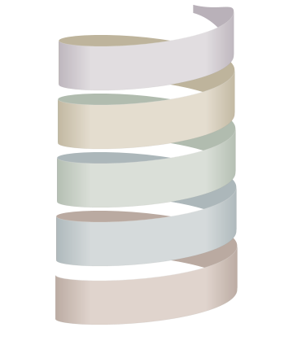

DES SITUATIONS RÉELLES. UN ANGLAIS QUI AVANCE.
Les bases sont là.
Entraînez-vous
à vous en servir.
Améliorez votre anglais en vous entraînant dans les situations où vous en avez vraiment besoin.
Réserver un diagnosticPLUS DE CLARTÉ. PLUS D’OPPORTUNITÉS.
Des conversations qui comptent vraiment.
LE PROBLÈME
Vous savez quoi dire.
Mais pas toujours comment le faire sortir.
Au travail, en voyage ou dans une conversation imprévue, la pression peut vite faire baisser la clarté, la fluidité et la confiance.
Ce qui compte, ce n’est pas seulement ce que vous savez. C’est ce que vous arrivez à mobiliser au bon moment.
DES SITUATIONS BIEN RÉELLES.
- Une réunion
- Un entretien
- Un voyage
- Un restaurant
- Une conversation spontanée
- Une nouvelle rencontre
LE DIAGNOSTIC
Avant de s’entraîner, il faut savoir quoi travailler.
Un diagnostic pour voir comment vous utilisez votre anglais aujourd’hui et définir vos premières priorités.
Réserver un diagnosticVOTRE PROFIL DE COMMUNICATION


Des réponses claires pour avancer plus loin.
LA MÉTHODE BURKEYS
Même méthode.
Toujours plus loin.
Un entraînement structuré en 5 piliers pour développer une communication plus claire, plus fluide et plus efficace sous pression.
Découvrir la méthode
- SOUND
- FLOW
- DECISION
- CONTROL
- LIVE
Des réponses plus clairesau bon moment.
Un entraînement progressifancré dans le réel.
Des repères plus solidesdans votre communication.
DERRIÈRE LA MÉTHODE
Entre langue et performance.
Franco-américain, j’enseigne l’anglais depuis plus de 15 ans et j’accompagne aussi des sportifs de haut niveau en tant que coach.
BurKEYS est né de ces deux univers : l’apprentissage d’une langue et l’entraînement à la performance. Parce que savoir quoi faire et réussir à le faire sous pression sont deux choses différentes.
Julien Burke
Fondateur de BurKEYS
- 15+ ansd’enseignement de l’anglais
- Franco-américaindeux langues, deux cultures
- Coachexpérience de la performance et du haut niveau

UNE SÉANCE. CINQ MINI-ENTRAÎNEMENTS.
Votre entraînement continue entre les séances.
Chaque semaine, une séance de coaching structure votre progression. Entre les séances, cinq mini-entraînements de 10 minutes vous permettent de répéter, d’appliquer et de transformer les acquis en réflexes utilisables.
Le cycle commence par les mécaniques essentielles BurKEYS. À mesure que vos habitudes de communication deviennent plus claires, l’entraînement s’adapte davantage aux situations qui comptent pour vous.
Découvrir l’offreESPACE BURKEYS
Bonjour, Camille
Votre entraînement
- SOUND2 min
- FLOW2 min
- DECISION1 min
- CONTROL2 min
- LIVEOne Take · 20 sec
UN PEU, SOUVENT.
La communication se travaille comme un sport ou un instrument : avec des répétitions courtes et régulières.
Un son. Une structure. Une décision. Une mise en situation.
Une séance hebdomadairepour définir vos priorités.
Cinq mini-entraînements de 10 minutespour construire des réflexes.
Une application de plus en plus cibléesur vos situations réelles.
RETOURS DU TERRAIN
Premiers entraînements.
Premiers retours.
« Très bonne gestion de l’utilisation du français quand tu sens que je décroche en anglais, et vice versa. Le fait que tu sois franco-américain est évidemment un vrai plus. »
Créateur de contenu tech & Data Scientist
« Des séances ludiques et utiles, loin du cadre trop scolaire et formel qui fait perdre du temps à beaucoup de personnes. Là, c’était simple, rapide et efficace. »
Service Delivery Manager · Verifone
« Disponibilité, écoute, adaptation, mise en situation et don de soi. Merci beaucoup Julien pour ton aide précieuse ! »
Arbitre de rugby · Niveau national

VOTRE POINT DE DÉPART
Jusqu’où votre anglaispeut-il vous emmener ?
Un diagnostic pour identifier vos priorités et tracer un parcours d’entraînement adapté à vos situations.